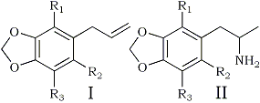

It is an interesting fact that most of the known psychotropic phenylisopropylamines (amphetamines) possess ring-substitution patterns identical to those of natural essential oils. (The single exception is the active 2-methoxy-4,5-methylenedioxyamphetamine (MMDA-2, IId1); neither the allyl nor the propenyl counterpart has been observed in plant extracts.) Thus 3,4-methylenedioxyamphetamine (MDA, IIa) is related to safrole (Ia)2 (Table 1), 3,4,5-trimethoxyamphetamine (TMA) to elemicin3, 3-methoxy-4,5-methylenedioxyamphetamine (MMDA, IIc) to myristicin (Ic)4 (Table 1), 2,4,5-trimethoxyamphetamine to asarone, and 2-methoxy-3,4- methylenedioxyamphetamine (MMDA-3a, IIb) to croweacin (Ib) (Table 1). C. F. Barfknecht, of Idaho University, tells us that there is preliminary evidence that these olefins may be aminated in the living organism, and this reaction can be readily performed in vitro. There are two additional essential oils known that contain the methylenedioxy ring. These are apiole (Ie) and dillapiole (If) (Table 1). the two naturally occurring aromatic ethers are the two possible ring-methoxylated analogues of myristicin. We have synthesized the two amphetamines which correspond in structure to these essential oils, that is, 2,5-dimethoxy-3,4-methylenedioxyamphetamine DMMDA, IIe) and 2,3-dimethoxy-4,5-methylenedioxyamphetamine (DMMDA-2, IIf).
Table 1
A Comparison of the Structures of the Natural Essential Oils (I) and the Amphetamines (II)
|  | R1 |
R2 |
R3 |
I | II |
Potency (M.U.) |
H | H | H | Safrole | MDA | 3 | |
OCH3 |
H | H | Croweacin | MMDA-3a | 18 | |
H | OCH3 |
H | Myristicin | MMDA | 2 | |
H | H | OCH3 |
(Unknown) |
MMDA-2 | 21 | |
OCH3 | OCH3 |
H | Apiole | DMMDA | 12 | |
H |
OCH3 |
OCH3 |
Dillapiole | DMMDA-2 | 5 |
DMMDA was synthesized directly from apiole (obtained from oil of parsley) using the same sequence of steps (isomerization, beta-nitration, and hydrogenation) that was successful in the conversion of myristicin to MMDA4 It was not possible to isolate useful quantities of dillapiole, so it was obtained synthetically5 and converted through the above steps to DMMDA-2.
A threshold intoxication with DMMDA in human volunteers was consistently recognized at about 200 ug/kg (calculated as the free base and administered orally the hydrochloride). With most subjects* concentrations within the range 250-300 ug/kg produced a psychotropic episode with the following chronology. The initial 1.5 h, preceding the first indications of mental change, were quite free of the signs of the autonomic distress that have frequently been observed with both mescaline and TMA, but only occasionally within the MMDA series. Mild incoordination marked the start of the intoxication period which lasted 2-4 h. During this interval there only mild perceptual distortions and, in common with MDA, there were increased generalizations of the thought processes, increased emotional affect and empathy, as well as euphoria and a lack of anxiety. The colour exaggerations of mescaline and the eyes-closed images characteristic of MMDA were absent. The gradual disappearance of this syndrome was complete in 8-12 h the subjects' recall of these events and interpretations was unimpaired, as has been consistently true with the amphetamines. The syndrome of DMMDA-2 intoxication was qualitatively similar in nature; the threshold was first observed at 400 ug/kg and an effective range was established as lying between 600-1000 ug/kg. DMMDA-2 has therefore an activity intermediate between DMMDA and MMDA, the latter being active in the vicinity of 2-2.5 mg/kg.
Two arguments must be considered in any explanation of the activity of compounds such as these. First, it has been suggested that beta-phenethylamines may participate in central nervous system metabolism through ring closure with the formation of an indole intermediate.
This cyclization has been argued as involving an electrophilic attack by the protonated amine on the aromatic ring. In this manner both epinephrine6 and the demethylation products of mescaline7 have been oxidatively cyclized in vitro, although no evidence has appeared to support such reactions in vivo. At first appearance this argument is supported by the observation that the addition of a methoxyl group to either of the ortho- positions of MMDA (to produce DMMDA or DMMDA-2) increases the potency of the product in vivo. Such substitutions would certainly enhance electrophilic ring closure. Specifically, the dose levels of DMMDA and DMMDA-2 reported here allow assignments of potencies of 12 and 5 mescaline units (MU)1 respectively, whereas the trisubstituted counterpart MMDA has a rating of about 3 MU.
An alternate indole synthesis route must also be considered. It will be noted that if the meta-methoxyl group were removed from either of these tetrasubstituted amphetamines (so actually reducing its theoretical ease of cyclization) MMDA-3a (IIb) would be obtained from DMMDA, and MMDA-2 (Id) from DMMDA-2, yet both of these simpler bases are of still higher potencies (MU of 18 and 21, respectively). Thus it may not be the presence, but rather the position, of the additional group that leads to an enhanced activity. This latter route would then suggest an interaction of the amino-groups with a quinonic intermediate in which the oxygen atom of the ortho-methoxyl group participates.
A second argument is that several phenolic amines are known to act as neurotransmitters. Methylated and methoxylated analogues might function directly (without chemical modification) either as inhibitors or as false transmitters in the specific neural networks served. On the basis of this hypothesis a psychotomimetic molecule should be resistant to chemical attack, rather than sensitive to it, as would be required for conversion to an indole.
Any attempts to understand the mechanisms of action of these materials must still consider the qualitative distinctions that have been noted, however. The two new psychotropic agents reported here, as is true with the two-oxygen methylenedioxy analogue MDA, exhibit changes in affect and empathy and in general are intoxicants, but they should not be classified as psychotomimetics. It seems that this property occurs, at least among the phenylisopropylamines only in those which are trisubstituted.
Note
* All subjects were familiar with the other materials mentioned in the comparisons; MDA, MMDA, MMDA-3a.